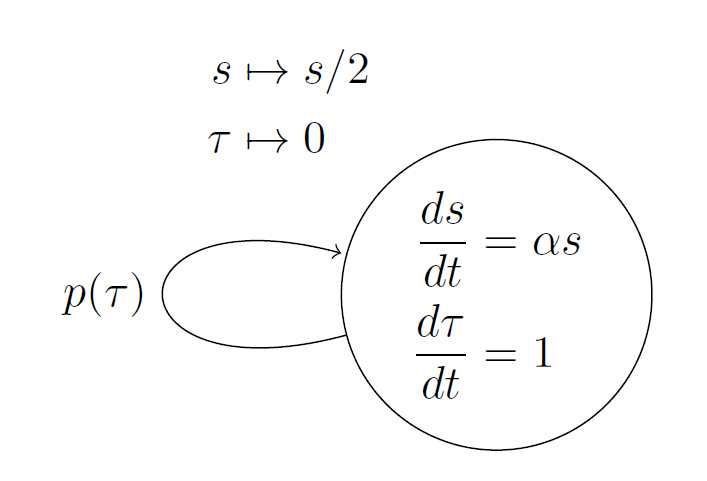
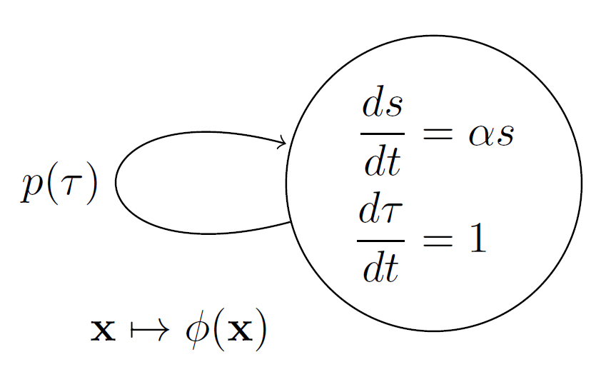

2 Introduction
2.1 Getting started in cell division modeling
Let the cell size \(s\) grow exponentially according to the equation \[\frac{ds}{dt}=\alpha s, \, s(0)=s_0,\] where \(\alpha\) is the growth rate, \(s_0\) is the initial cell size, and \(t\) is the experiment time. Also, let the cell cycle time \(\tau\) be the time it takes for a cell to grow and divide. The cell cycle progress is represented by the equation \[\frac{d\tau}{dt}=1, \, \tau(0)=0.\]
A division event occurs when a cell splits into two daughter cells. This event resets both the cell size to half and the cell cycle time to zero, that is, \[ s \mapsto s / 2, \quad \tau \mapsto 0,\] marking the end of one cycle and the start of a new one. Let \(P(\tau)\) define when division happens as per \[P(\tau)=U(\tau-\bar{\tau})=\begin{cases} 1, \text{ if } \tau > \bar{\tau} \\ 0, \text{ otherwise,} \end{cases}\] where \(U(\tau-\bar{\tau})\) is the unit step function and \(\bar{\tau}\) is the time to division since the start of the cell cycle. Cell performs a division event if \(P(\tau)=1\).
The division rate can be defined as \[\begin{aligned} p(\tau)&=\frac{d P}{d\tau}\\ &=\delta(\tau-\bar{\tau}), \end{aligned}\] where \(\delta(\tau)\) is the Delta Dirac function. The above description is summarized using graph or automata notation in Fig 1.

Cell size \(s\) at a given experimental time \(t\) can be written as the combination of sizes in individual cell cycles, that is, \[\begin{aligned} s(t)=\sum_{n=0}^{\infty} s_n(t) P_n(t), \end{aligned}\] where \[\begin{aligned} s_n(t)=&s_{0}\left[\prod_{i=1}^{n} \frac{e^{\alpha\left(t_{i}-t_{i-1}\right)}}{2}\right] e^{\alpha\left(t-t_{n}\right)}\\ =&\frac{s_0}{2^n} e^{\alpha t} \end{aligned}\] is the cell size \(s\) at experimental time \(t\) given cell performed \(n\) divisions. The sequence of experimental times at which division happens is \(t_i\) with \(t_i-t_{i-1}=\bar{\tau}\). The cell cycle time after \(n\) divisions is given by \(\tau=t-t_n\). \[P_n(t)=\begin{cases} 1, \text{ if }\quad n\,\bar{\tau} < t \leq (n+1)\bar{\tau} \\ 0, \text{ otherwise} \end{cases}\] dictates the number of cell cycles \(n\) performed by the cell at time \(t\). Cell size \(s(t)\) is a periodic function in time, with a period \(\bar{\tau}\) and a repeating dynamics represented by exponential growth \(s_0e^{\alpha t}\) in the cell cycle interval \(\tau \in [0,\bar{\tau}]\).
2.2 Division mechanisms: the timer, the sizer, and the adder
We also can track key features of the cell cycle such as division time \(\tau_d\), newborn \(s_b\), division \(s_d\), and added size \(s_a\). The feature \(s_c\) records the newborn cell size of the next division event. Let \[\mathbf{x}=[s_d,s_a,s_b,s_c,\tau_d, s, n, \tau]\] be the vector of cell cycle features. At the beginning of the experiment \(s_b(0)=s_c(0)=s_0\), \(s_a(0)=\tau_d(0)=0\). At the end of the first cell cycle, the size at division resets to the current cell size \(s_d \mapsto s\), then we compute the added cell size \(s_a\mapsto s-s_b\), the newborn cell size becomes half the division size \(s_b \mapsto s/2,\) the number of cell cycles performed resets to \(n\mapsto n+1,\) and the cell cycle time resets to zero \(\tau \mapsto 0.\)
It is important to maintain the order in the resets performed. Preserving this order of updating features ensures that once a cell cycle ends, \(s_c\) records the newborn size of the next cell cycle event. The updated vector of features is \[\phi(\mathbf{x})=[s,s-s_b,s_c,s/2,\tau,s/2,n+1,0].\] The modified graph summarizing the cell division dynamics is shown in Fig 2.

The relationships between \(s_b\), \(s_d\), \(s_a\), and \(\tau_d\) describe the division control mechanism . For any cell cycle, assuming that the cell cycle time \(\tau_d[n]=\bar{\tau}\) is kept fixed over generations using the division rate \(p(\tau)=\delta(\tau-\bar{\tau})\), we have \(s_d=s_b e^{\alpha \bar{\tau}}\) and \(s_a=s_d-s_b=s_b (e^{\alpha \bar{\tau}}-1)\). This is known as the timer strategy for cell division. For any cell cycle \(n\) we see that the size of the newborn cell \(s_b[n]\) is affected by the size of the newborn cell in the previous generation, i.e., \[s_b[n]=\frac{e^{\alpha \bar{\tau}}}{2}s_b[n-1]\]. This recursion can be rewritten as a function of the number of cell cycles \(n\) \[s_b[n]= \frac{e^{n \alpha \bar{\tau}}}{2^{n}} s_0.\] Division size at any cell cycle is given by \[s_d[n]= \frac{e^{(n+1) \alpha \bar{\tau}}}{2^{n}} s_0.\] Added size series are \[s_a[n]= (e^{\alpha \bar{\tau}}-1)\frac{e^{n \alpha \bar{\tau}}}{2^{n}} s_0.\] These series converges to a non-zero finite value only when \(\tau_d=\bar{\tau}=\log{2}/\alpha.\) This reduces the size at division to \(s_d=2 s_b\), and the added size in any cycle to \(s_a=s_b\). This implies that for any timer strategy, we will find a slope of 2 when we plot the size at division \(s_d\) vs. newborn size \(s_b\). Plotting added vs. newborn size gives a slope of one.
If we assume the cell divides by the division rate \(p(s)=\delta(s-\bar{s})\), for any cell cycle \(n>1\) then we have \[s_d[n]=\bar{s},\, s_b[n]=\bar{s}/2,\, \text{and } \, \tau_d[n]=\log{2}/\alpha.\] Such division strategy is known as sizer.
An alternative to this division mechanism is considering that the cell aims to add a fixed amount of size at any cell cycle. Let the division rate be \(p(s)=\delta(s-s_b-\Delta)\), then the size at birth at any cell cycle \(n\) is \[\begin{aligned} s_b[n]=&\frac{s_b[n-1]+\Delta}{2}\\ =&\frac{s_0+(2^n-1)\Delta}{2^n} \end{aligned}\] where \[\lim_{n\to \infty}s_b[n]=\Delta.\] Such division strategy is know as adder. Size at division for the \(n\) cell cycle is given by \[ s_d[n]=2^{-n}(s_0 -\Delta)+2 \Delta, \, \lim_{n\to \infty}s_d[n]=2 \Delta. \]
Division time at any cell cycle is given by \[\begin{aligned} \tau_d[n]=&\frac{1}{\alpha}\log \frac{s_d[n]}{s_b[n]}\\ =&\frac{1}{\alpha}\log\left({2+\frac{\Delta-s_0}{s_0+(2^n-1)\Delta}}\right), \end{aligned}\] where \[\lim_{n\to \infty}\tau_d[n]=\frac{\log 2}{\alpha}.\] All division strategies can be summarize when assuming a division rate \(\delta(s-b\,s_b-a)\). Size at birth in any cell cycle is given by \[ s_b[n]=\frac{b^n(a+(b-2)s_0)-2^n\,a}{2^n(b-2)}. \] Note the special cases \(b=1\), \(a=\Delta\) as adder and \(b=0\) as sizer. The size at division is given by \[ s_d[n]=a+\frac{b^{n+1}(a+(b-2)s_0)-2^nba}{2^n(b-2)}. \] Cell cycle time is given by \[ \tau[n]=\frac{1}{\alpha}\log \left[b-\frac{2^n a(b-2)}{2^n a-b^n(a+(b-2) s_0)}\right]. \]